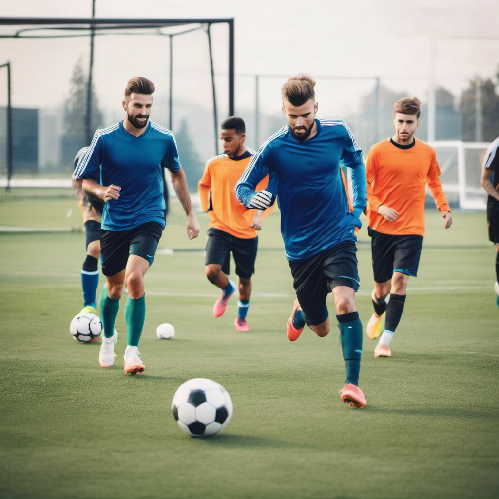
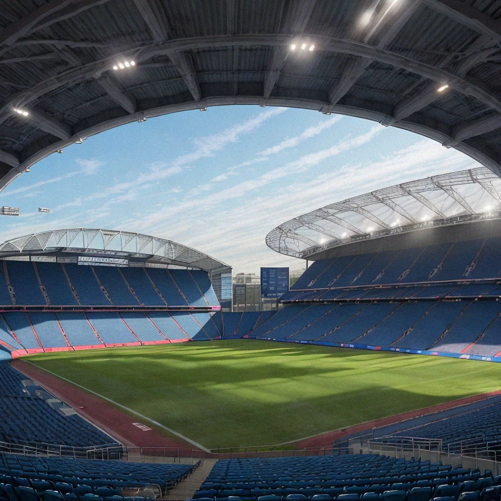

{{ title | uppercase }}
Üdvözlünk a csapatnál!
Nagy örömünkre szolgál, hogy bemutathatjuk magunkat a labdarúgás világában. Mi, a Szeged BYD Akadémia, egy fiatal, ambiciózus csapat vagyunk, akik együtt dolgoznak azért, hogy meghódítsuk a futball pályákat és a szurkolók szíveit.
A szurkolók a csapatunk legfontosabb részei. Nélkülük nem lenne ugyanaz az atmoszféra a stadionban, és nem lenne ugyanaz a lendület a pályán. A Szeged csapatának hűséges szurkolótábora mindig ott van velünk, bármelyik stadionban játszunk is.
Ahogy útnak indulunk a siker felé, hálásak vagyunk minden támogatásért és bizalomért, amit kapunk. Ígérjük, hogy minden mérkőzésen a legjobbunkat fogjuk nyújtani, és büszkén fogjuk képviselni a Szeged BYD Akadémia nevét.
Köszönjük, hogy csatlakoztatok hozzánk ezen az izgalmas utazáson! Hajrá Szeged!
Tisza-parti Aréna
A Tisza-parti Aréna Szeged új büszkesége, amely a város ikonikus folyója, a Tisza partján emelkedik. Ez a modern stadion otthont ad a város legújabb futballcsapatának, és egyben közösségi központként is szolgál a sport és a kultúra szerelmesei számára.
Az aréna tervezésekor kiemelt figyelmet fordítottak a fenntarthatóságra és az innovációra, így a létesítmény környezetbarát megoldásokkal rendelkezik, mint például napenergia-hasznosítás és esővízgyűjtő rendszerek. Ez a modern megközelítés nemcsak a stadion működését teszi fenntarthatóvá, hanem inspirációt nyújt a környezettudatosság iránt elkötelezett közösségnek is.
A Tisza-parti Aréna nemcsak futballmérkőzéseknek ad otthont, hanem kulturális eseményeknek, koncerteknek és egyéb rendezvényeknek is. Az aréna építésével céljuk volt, hogy egy olyan helyet hozzanak létre, amely összehozza a város lakóit és vendégeit, és emlékezetes élményeket nyújt mindenkinek, aki ellátogat ide.